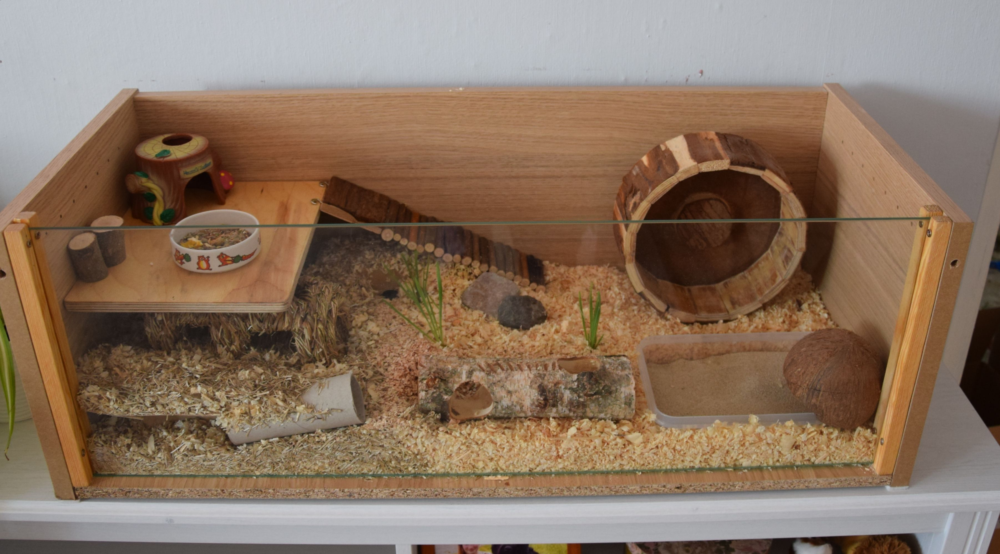

Getting a hamster? Here's what you need to know
Hamsters might look small, but they're still a big responsibility and need plenty of care and attention.
From what size cage to buy to what you should be feeding your four legged friend, we've got all the info you
need to get started.
Getting a hamster as a pet is really exciting. Remember to do lots of research around where to get your
new hamster from
(we’d recommend checking reputable rehoming centres first).
The first thing you’re probably thinking about is where they'll live,
what’s the best cage for a hamster and what do hamsters eat. The simple answer to this is the bigger cage you
can get for your hamster,
the better! We’d always recommend finding the biggest home for your pet so they can live comfortably. Below
are some examples:

In the wild, hamsters make burrows, climb and walk for miles each day, so their living space needs to be large enough to allow them to behave as naturally as possible. Most hamster cages sold in shops aren't big enough to even meet a hamster's most basic needs, so instead, we recommend providing them with a much larger space, such as an extra-large cage, glass tank, or home-made enclosure. Wherever you choose to house your hamster make sure it has the following:
- A large, usable floor area with plenty of space for exploring - (minimum cage size of 100x50cm)
- Places to climb such as branches, ladders or shelves
- A deep enough solid base to accommodate 25cm (10 inches) of suitable bedding for burrowing, sleeping and storing food
- Nest boxes to sleep and hide in
- A secure lid and doors because hamsters are fantastic escape artists
- Toys to keep them entertained
- Quiet, calm and away from anything noisy such as the TV or washing machine - noise and vibrations are stressful for hamsters.
- Kept at a steady temperature between 18-21°C and out of draughts and direct sunlight. If your hamster's cage gets too hot, they won't be able to escape and could develop heatstroke, if it gets too cold they might slip into a dangerous survival state, similar to hibernation but called 'torpor'.
Safe bedding
It’s really important to give your hamster a deep (approx. 25cm/10 inches) layer of bedding so they can
burrow like they would in the wild. They use the burrow for sleeping,
hiding and storing food so it’s important to use a bedding that will hold its structure when tunnelled into.
Examples of safe bedding include:
- Paper-based bedding – this is a really good option and can be used on its own or with other types mixed in.
- Aspen, spruce or hemp bedding – similar to sawdust/wood shavings but made from hardwood and dust free. However, they aren’t great at supporting burrows, so you’ll need to add a paper-based bedding for extra stability.
- Toilet paper – unscented, and the cheaper the better because thick toilet paper can cause gut blockages if eaten.
- Soft hay – hay is a great addition to any of the beddings above, and will help add extra structure and stability to your hamster’s burrows.
Beddings that must be avoided are:
- Pine/cedar shavings – wood shavings and sawdust are very dusty and can cause breathing problems.
- Fluffy beddings – such as cotton wool, kapok, and bamboo fluff, these are often marketed as safe for hamsters but can cause injuries by getting wrapped around their legs, and life-threatening gut blockages if ingested.
- Scented bedding – the scent will irritate your hamsters airways.
- Shredded newspaper – the ink can be toxic to hamsters.
Toys and accessories
Hamsters need plenty of toys to stop them getting bored. However, it's best to always stick to the same cage layout week-on-week as they find sudden changes stressful. Your hamster will love any of the following:
- Tubes and cardboard boxes to crawl through, hide inside and chew
- Branches and shelves to climb up on
- Untreated soft wood branches and gnawing blocks to help them wear their teeth down
- A plastic exercise wheel. Just make sure it’s as large and wide as possible, a lot of hamster wheels available to buy are too small, forcing hamsters to run with a curve in their back which can cause long-term damage and pain. The wheel also needs to have a solid surface to run on, not slats or bars that your hamster could get their legs caught in. (wheels should be at least 20cm for Dwarf Hamsters and 30cm for Syrian Hamsters)
Food bowls and water bottles
Food bowls and water bottles
- Your hamster will need a water bottle, and their water should be replaced daily.
- They need fresh food daily but instead of feeding them from a bowl, scatter their food around their living space and hide some in tubes – this will keep them entertained for hours and is a much more natural way for them to eat.
Cleaning your hamster's cage
You will need to regularly clean out your hamster's cage to make sure that it's a healthy and hygienic place for them to live. It's best to do this in the evening when they’re awake, instead of waking them up and moving them when they’re trying to sleep.